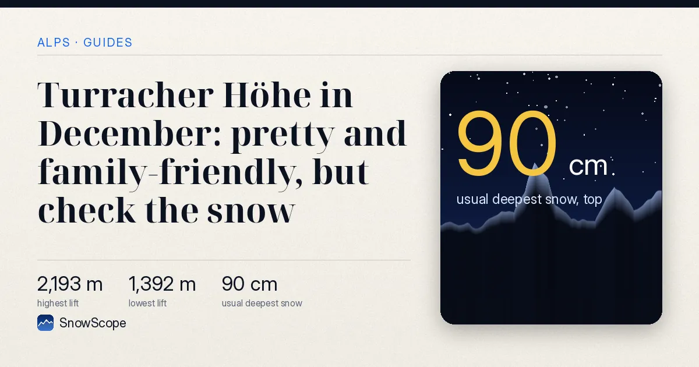

Turracher Höhe in December: pretty and family-friendly, but check the snow
On a typical 15 December, Turracher Höhe shows 23 cm of snow at mid-mountain (1792 m) across 46 winters of records. Only 39 percent of those winters had 30 cm or more in the week of 15-21 December, which means early December is a gamble.
See the live snow forecast for Turracher Höhe in the SnowScope appSnow depth, powder alerts and the 3D map, free.
The challenge at the base
The village sits on a high pass at 1392 m, and that height is the weak point in December. Across past winters, a typical 15 December brings just 10 cm at the base. In the week of 15-21 December, only 4 percent of winters reached 30 cm there. The snow comes late: the usual first day with 30 cm at mid-mountain is 22 December.
Recent decades show less snow in early December. The share of Christmas weeks with 30 cm at mid-mountain fell from 67 percent in the first 15 winters (1980-81 to 1994-95) to 27 percent in the last 15 (2011-12 to 2025-26). Last winter had just 3 cm on 15 December at mid-mountain, so thin Decembers do happen.


Where to ski if you go early
The upper slopes give better odds. At the top (2193 m), a typical 15 December has 34 cm, and 70 percent of winters reached 30 cm in Christmas week. The vertical is 801 m across 34 km of runs and 15 lifts, so there is room to work uphill and avoid bare ground.
The ski area suits families with 15 lifts spread across gentle terrain. If you go before 22 December, plan to spend more time at higher elevations and accept that lower runs may be thin or close.
Snow depth by date
At mid-mountain, the progression is: 12 cm on 1 December, 23 cm on 15 December, 26 cm on 24 December, 28 cm on 31 December. These are typical depths from past winters. In a deep year (1 in 10), mid-mountain reaches 48 cm by 15 December. In a thin year, only 4 cm.
The range shows why December here is uncertain. You may find decent base by Christmas, or you may find rocks close to the surface. The whole-winter picture is modest: a typical peak at mid-mountain is 67 cm, and February is usually the deepest month, not December.
Cost: low season until Christmas Eve
The 2026-27 lift pass carries a low-season rate from opening day to 24 December, then main season after. The adult day pass costs EUR 72.50 in both seasons. The 6-day pass is EUR 353 in low season and EUR 381 in main season, so the saving is on a full week before Christmas, not on individual days.
Book a week in low season and you save EUR 28 on a 6-day pass. Book flexibility into your dates: mid-mountain snow hits 30 cm only around 22 December on average.
Glacier alternative at the same price
Mölltaler Gletscher sits in the same province and costs about the same. Its lowest lift is at 2103 m with 66 cm on a typical 15 December, and 91 percent of winters had 30 cm in the week of 15-21 December. The 6-day low-season pass was EUR 332 on its last published list (2025-26 season).
For December, the glacier wins on snow depth and arrival date. Turracher Höhe wins on family atmosphere and lower-altitude runs. From January onward, mid-mountain snow at Turracher Höhe becomes more reliable.
Tips for skiers
- Book a full week in the low season (before 24 December) to save EUR 28 on a 6-day pass. Avoid single days unless snow is confirmed.
- If you visit before 22 December, ski the top lift. At 2193 m, 70 percent of Christmas weeks had 30 cm compared with 39 percent at mid-mountain.
- Check snow depth a week before you travel. Thin Decembers do occur; last winter had only 3 cm on mid-mountain on 15 December.
- Plan more time indoors in early December. December daylight is short at this latitude, and thin snow may force closures of lower runs.
- Leaving the piste after a storm: consult the official avalanche bulletin from Lawinenwarndienst Steiermark (lawinen.report).
About these numbers
Resort snow depths are the deepest snow on the resort's upper slopes on the date shown; they are estimates for an area, not a measurement at one point. Forecasts can change. Always read the official avalanche bulletin before going off-piste.
Official avalanche bulletins: Lawinenwarndienst Steiermark
Cite this report
For research, teaching or the press: the numbers and charts are free to reuse under CC BY 4.0 with this citation.
SnowScope (2026), Turracher Höhe in December: pretty and family-friendly, but check the snow, https://snowscope.app/blog/en/2026/11/turracher-hoehe-december-skiing-honest-snow-check.html, accessed 2026-11-14
SnowScope (Atlas Labs). (2026, November 14). Turracher Höhe in December: pretty and family-friendly, but check the snow. SnowScope snow reports. https://snowscope.app/blog/en/2026/11/turracher-hoehe-december-skiing-honest-snow-check.html
BibTeX
@misc{snowscope2026turracherhoehedecembersk,
author = {{SnowScope (Atlas Labs)}},
title = {Turracher Höhe in December: pretty and family-friendly, but check the snow},
year = {2026},
month = nov,
howpublished = {\url{https://snowscope.app/blog/en/2026/11/turracher-hoehe-december-skiing-honest-snow-check.html}},
note = {Published 2026-11-14 20:14 UTC; accessed 2026-11-14}
}· CC BY 4.0 · Methods, data and tools →
Turracher Höhe: snow and temperature by height, this winter vs last (tools) →
Follow Turracher Höhe
Free: a message when fresh snow is coming, and the forecast every morning.
More snow reports

Andermatt forecast for 23–29 November: 21 cm at the top, 19 cm mid-mountain, 15 cm at the base. Best snow on Wednesday 25 November.

Only Zugspitze and upper Fellhorn reliably hold 30 cm by mid-December. Lower Bavarian hills offer cheaper tickets but much lower snow odds. Data from 13 November 2026.

Our 46-winter Alps record at 108 points from 667 to 3,872 m: snow days down at all of them, clearly at 81 %. What changed at each height, and why.